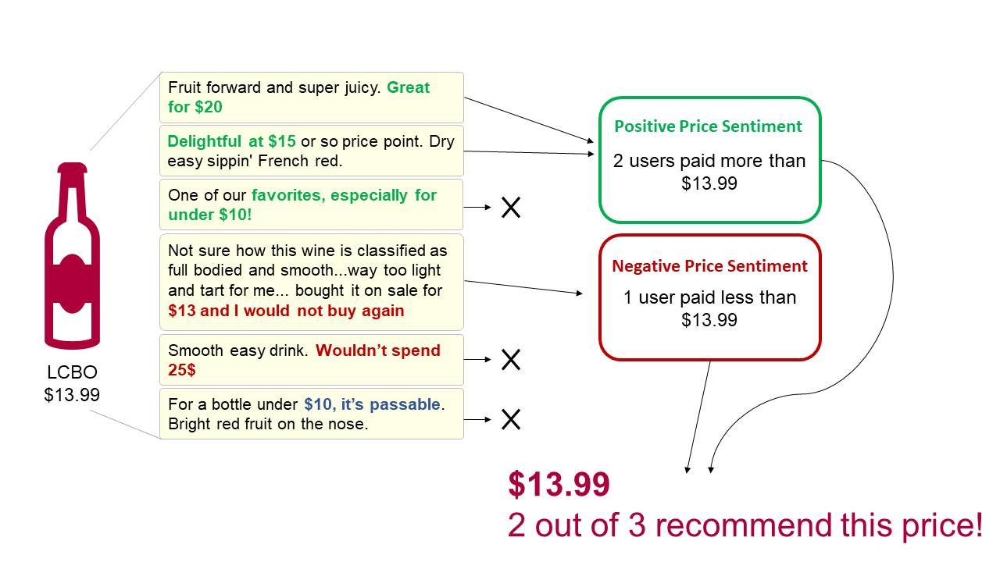
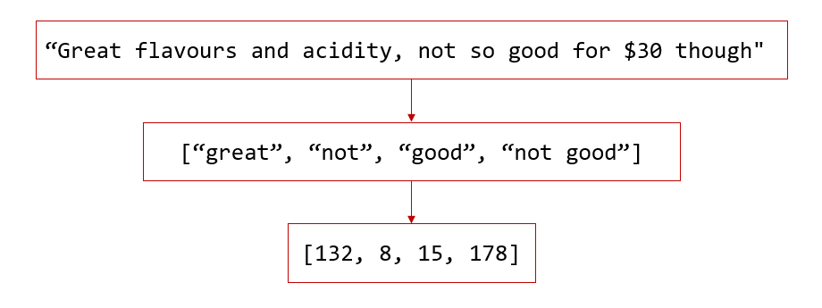
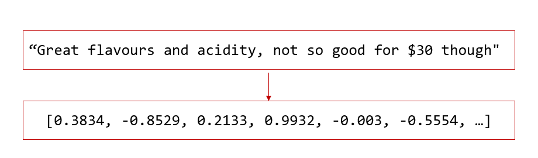

Hi, I'm Stephen!
Welcome to OVINO! I made this app to help me find awesome wine for the best prices anywhere in Ontario, Canada. Anywhere! All liquor stores are owned by the government, and they publish their live prices and inventories online. OVINO databases this information and uses AI to judge whether these prices are 'good'.
So, if you're on the hunt for some tasty and well priced wines, click on the OVINO logo above. Type in your general location and enjoy!
If you'd like to learn more, continue reading below. For detailed explanations, check out my blog!
I'm happy to announce that OVINO was awarded the best data science project! A competition was held amongst dozens of doctorates at my blog, a data science bootcamp with <3% admission rate.
The problem.
I'm lost when buying wine. Aisles are geographic. Prices are random. Descriptions are terse. And, there's a fancy section where I can make heavy bets.
The barrier of entry for wine is incredibly high for newcomers! The tiny terse descriptions adds a layer of accessibility issues.
The LCBO reduces this barrier but not by much. While there is an app, it lacks ratings and is clunky to use. Recommendations from their in-person guides have never delivered, even after sharing feedback with the same expert. And, a government-run monopoly does not give confidence of fair prices.
The solution.
We can solve this with data. It's all there!
My solution is to connect LCBO's live database of wines to Vivino, a very popular wine app with nearly 100 million wine ratings. This would immediately deliver thousands (100k for some bottles!) of ratings for each wine.
It is still a lot of work to sift through wine descriptions and ratings. Including reviews may seem beneficial but its generally full of 'noise' (i.e., long lists of flavour notes and profiles).
What I desire is a well-priced wine. 'Well-priced wine' is subjective, however! There are 'amazing' $5 and $50 wines, but not everyone will agree. So, how can I crowdsource opinions on wine prices?
My insight: I noticed about 1 in 150 user reviews on Vivino list the price they paid and the sentiment for that price! By gathering these price reviews, I can collectively judge whether the prices at my stores are considered good or bad.
Here's a schematic of my idea:

The price recommender.
How do I sift through all of these reviews? With some exploratory data analysis to start. Here's a link to one of my posts that digs into the reviews.
Step one: Identify reviews with prices
Identifying reviews containing prices is straightforward: if there is a dollar sign '$' followed by a set of numbers then that is the price. This reduces millions of reviews to roughly 150k with prices that users paid, about one-third of which are for bottles available at the LCBO.
Step two: Create training data
Trying to extract the price sentiment from 50k reviews is a lot of effort. This is where the power of machine learning comes in! To train a machine learning model, we need to have (1) a set of reviews labelled with price sentiments, and (2) a way to embed reviews as numbers to do some math.
(1) I manually labelled a subset of reviews with price sentiments. Here's a link summarizing the data; it has figures like this one:

(2) Converting reviews into numbers is described in detail here. Here's a brief summary of how I do this:
I use two Natural Language Processing methods: the 'bag of words' model and 'sentence embeddings'. The 'bag of words' model identifies keywords and labels them with a unique number. Here's an example:

You can see the problem immediately: the context is lost and multiple sentiments are merged together! This leads to more false positives for longer reviews; less so with shorter reviews like "good price for $20". We can employ bigrams by treating "good price" as one keyword also.
I use Google's AI language model called BERT which is a transformer trained on an enormous corpus of text and designed to understand a text's 'meaning'. In particular, I use a modified BERT model called S-BERT that embeds the meaning of a text as numbers. Here's a schematic:

Appears a bit magical! These transformers help tremendously:
(a) Most reviews are dominated by descriptions of wine flavours, nuances, and other thoughts. The transformer can often identify the price sentiment which often represents a small section of a review! This is really useful for imbalanced datasets like mine where there are fewer negative and neutral price sentiments than positive ones.
(b) Little text pre-processing! The transformers are trained on corpuses like Reddit and Twitter. Unlike the bag of words model, the transformers understands that "perform", "performed", "performs", "performing", etc. effectively share the same meaning and are related to other synonyms! This can reduce the amount of data necessary to train a model significantly.
Sometimes the sentence transformer can just miss the mark. It is very good at abstracting meaning from text. But, the AI model may not understand that "Good QPR" means "Good quality-price ratio", which would be a positive sentiment that the bag of words model can learn easily. Combining the AI and bag of words models provides a model that understands (a) general rules and structures of human speech, and (b) special case words, slang, or wine nomenclature.
Turns out my solution is an analog to the 'wide & deep' recommender (paper here)! The 'wide' network represents memory of special cases. The 'deep' network captures the underlying meaning or abstraction. (I'll be adding a wide & deep recommender to give personalized wine recommendations soon!)
Step three: Machine learning!
The last step is to find the best machine learning model that can predict the correct price sentiments given a review. This requires experimentation. I use 6 different machine learning models and compare their performances here.
Here are the results for the best model, XGBoost! If you're not familiar with these sorts of plots, the performance is pretty darn good for NLP problems with an imbalanced dataset and small text signal.
If you've made it this far then thank you!
I hope I've peaked your interest in both wine and machine learning.
Bonus feature: The LCBO provides both the sugar content and ABV for most bottles. Sugar and alcohol make up most of the calories. So, I provide an estimate for each bottle's total calories. This is an estimate! I am not dietitian. I am a physicist with a pretty good understanding of energy conservation. So, this estimate should account for most of the calories.
{kind=link}